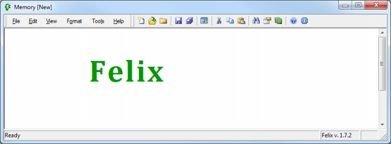
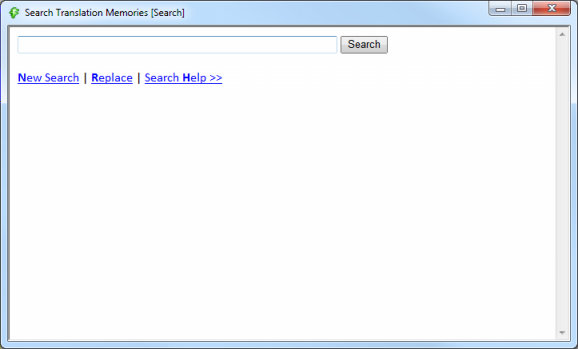
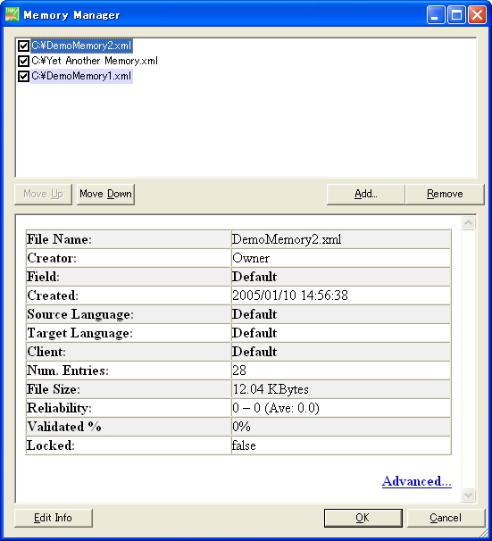
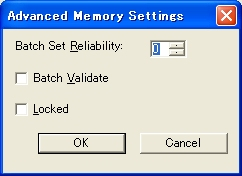

4. Getting around in Felix¶
4.1. Getting Started¶
To launch Felix, double click on the Felix icon. Felix will also launch automatically if you invoke it from one of the Microsoft Office interfaces or from TagAssist.
Tip
When you start Felix, it remembers the last position and window size, as well as the GUI language that you used. This is handy when you adjust your memory and glossary windows to be just right for your screen and office program setup.
4.2. The Memory Window¶

The Felix memory window displays the segments (sentences) you look up in your translation memories (TMs), as well as any suggested translations Felix may find.
Tip
You can zoom the size of the text in the memory window in and out. Click on the title bar of the window to make sure it’s active, then use Ctrl + Mouse Wheel to make the text larger or smaller.
This section describes the various features of the memory window, as well as the menu and toolbar items.
Sub-sections:
- 4.2.1. Add an Entry
- 4.2.2. Translation Matches
- 4.2.3. Edit an Entry
- 4.2.4. Quick Search
- 4.2.5. Delete an Entry
- 4.2.6. Add Glossary Entries from a Translation
- 4.2.7. Open a Memory
- 4.2.8. Save the Memory
- 4.2.9. Create a New Memory
- 4.2.10. Change the UI Language
- 4.2.11. Open a New Glossary Window
- 4.2.12. Set User Preferences
- 4.2.13. Connect to a Memory on the Server
4.3. The Glossary Windows¶

Felix allows you to have any number of glossaries open. Glossaries can be as large as you like: the only limitation is your computer’s memory. You can open multiple glossaries in a single glossary window, or you can have multiple glossary windows.
Tip
You can zoom the size of the text in the glossary window in and out. Click on the title bar of the window to make sure it’s active, then use Ctrl + Mouse Wheel to make the text larger or smaller.
Sub-sections:
4.4. Edit Mode¶
You can use Edit Mode to edit records displayed in the Memory and Glossary windows, and have those results reflected in the memory and glossary databases. Editing in the windows is very similar to editing in an ordinary word processing application, making it much easier to manage your memories and glossaries.
Sub-sections:
4.5. Search & Replace¶
As of version 1.5, Felix has a separate window for searching and replacing translation units (TUs).
To do search and replace in Felix, press CTRL + F from the memory window to search/replace in your translation memories, and from the glossary window to search/replace in your glossaries. The Search window opens.

You can also use a menu selection to open the Search window. From the memory window, select Edit ‣ Find ‣ Search Memory. From the glossary window, select Edit ‣ Find.
The old search method is still available as the “Quick Search” command, directly below the “Find” menu items. See Quick Search for details.
The window has a Search pane and a Replace pane:
Each translation record (entry) consists of several “fields”: the source text, the translation, context, the date the translation was created, and so on. By default, replacements are made for matching source and translation fields. You can also specify which field you want to perform the replacement in.
Enter a term to search for that term anywhere in a source or translation. Use tags in the format tag:term to make fine-grained searches. Below are the basic tags.
| Tag | Description |
|---|---|
| source: | Replace in the source field |
| trans: | Replace in the translation field |
| context: | Replace in the context field |
| created-by: | Replace the creator field |
| created: | Replace the date created |
| modified-by: | Replace the modified-by field |
| modified: | Replace the date modified |
| reliability: | Replace the reliability |
| validated: | Mark the record as validated (“true”) or not validated (“false”) |
| refcount: | Change the reference count of the record |
Click on the Help link on the Search and Replace panes for more tags.
4.5.1. Examples¶
Replace ‘aaa’ in source and translation segments with ‘bbb’:
From aaa
To bbb
Replace ‘xxx’ in source segments with ‘yyy’:
From source:xxx
To yyy
Follow a tag by an asterisk (*) to replace the entire field. For example, to change the “created-by” field of all matching records to “Ryan”:
From created-by:*
To Ryan
Change the record’s date created to 2009-10-01:
From created:
To 2009-10-01
Make the reliability of the record 5:
From reliability:
To 5
Validate the record:
From validated:
To true
4.5.2. The Search Pane¶
To find translation units (TUs), enter a search term in the text box, and click Search. The matching TUs appear on the screen. You can keep adding more search terms to refine your search, edit or delete matches, or perform replace operations.
Searching works by using “filters.” Each term you enter in the search box is kept in a list of filters, which are shown on the right of the page. You can keep adding filters, or delete existing ones from the list if you are not getting enough matches.
Normally, the text you enter in the search box is matched against TU source, translation, and context values. If the term is found in one of these values, it’s a match.
You can also make more fine-grained searches using tags, or “commands.” For example, to find TUs with the string “giraffe” in the source, you would specify source:giraffe. You can find help on using search commands by clicking Search Help >> in the Search window.
4.5.3. Examples¶
The search feature supports regular expressions. To use a regular expression, use the “regex” tag as follows: regex:April \d{1,2}, \d{4}
4.5.4. The Replace Pane¶
To do a replace in your memory or glossary, in the Search window, click on the “Replace” link. You can perform the replace within just a subset of your memory/glossary, by first doing a search, and replacing within the search results. Simply perform a search, and then click the “Replace” link.
Enter the text you want to change in the “From” box, and the text you want to change it to in the “To” box. Normally, the replace is performed in the source, translation, and context fields of the TU. For example, if you specify to replace “hippo” with “zebra,” then any instance of “hippo” in a source, translation, or context field will be replaced by the word “zebra.”
You can also make more fine-grained replacements using tags, or “commands.” For example, to replace the word “car” with the word “skateboard,” but only if it’s in a source fields, specify “source:car” in the “From” box, and “skateboard” in the “To” box. You can find help on using replace commands here.
4.6. Manage Your Memories¶
There is a new Memory Manager for Felix.

The Memory Manager window
You can still use the old Memory Manager if you prefer it, or you are running an older version of Windows.
4.6.1. Item Actions¶
In the row for each TM or glossary, there is a list of actions you can perform with that item.
View
View details about this TM/glossary.
Edit
Edit details for this TM/glossary.
Browse
Browse the translations in this TM/glossary.
QC
Perform QC. See Quality Control (QC) for details.
Remove
Removes this TM/glossary. Felix will prompt you to save if you have made changes to the item.
4.6.2. Global Actions¶
At the bottom of the TM/glossary listing, there are also global actions you can perform.
Load File
Load a memory or glossary file.
Add New
Add a new memory or glossary. It will appear at the top of the list, and contain no items.
Remove All
Remove all translation memories or glossaries.
4.6.3. Changing Order of TMs/Glossaries¶
In the rightmost column of the TM and glosaary listings are up and down buttons. You can use this to move TMs and glossaries up and down in the list. New entries are added to the topmost translation memory or glossary.
4.6.4. Quality Control (QC)¶
You can perform quality control on your TMs and glossaries. Click QC in the row of the desired memory or glossary.
When you click QC, you are presented with a list of potential quality issues in the TM/glossary. The translation appears, and underneath it a message about the quality issue that was detected. A sample QC message is Number Check: Number 3.2.11 in source but not in target. You can choose to edit the translation, delete it, or view details about that translation.
To configure the QC settings, click QC Settings on the bottom of the Home view. The following QC settings are available:
- Numbers
- Match numbers in source and target
- ALL CAPS
- Match ALL CAPS words in source and target
- Glossary
- Match glossary terms in source to translations in Target
- Live
- Perform live checking. If you select this, then Felix will perform QC on each translation you add, as you are translating.
4.6.5. Active and Inactive TMs/Glossaries¶
You can deactivate a TM or glossary. To activate or deactivate a TM/glossary, click Edit for that item, and clear the “Active” checkbox.
Deactivated memories and glossaries appear as light-gray text in the TM/glossary list. Although they can be used for concordance and searches, they are not used for TM and glossary searches.
4.6.6. Old Memory Manager¶
You can have any number of memories open at one time — the only limit is the physical memory and disk space available on your computer. Use the Memory Manager dialog to manage your various memories.
To call up the Memory Manager dialog, from the Tools menu, select Memory Manager…

The Memory Manager dialog appears:

- Memory List
- The list of currently loaded memories. Memories whose checkboxes are selected are “active”; only active memories are included in searches and the like.
- Move Up
- Move the selected memory up in the list. The top memory in the list is the “active” memory; new entries are added to this memory.
- Move Down
- Move the selected memory down in the list. The top memory in the list is the “active” memory; new entries are added to this memory.
- Add...
- Add (load) a memory into Felix.
- Remove
- Remove (unload) a memory from Felix. This does not delete the memory from your hard disk.
- Memory Info View
Displays various information about the currently selected memory.
- File Name:
- The file name of the currently selected memory.
- Creator:
- The name of the user who created the memory.
- Field:
- The field (subject) of the memory.
- Created:
- The date that the memory was created.
- Source Language:
- The source language of the memory.
- Target Language:
- The target language of the memory.
- Client:
- The client for whom the memory is used.
- Num. Entries:
- The number of entries in the memory.
- File Size:
- The size of the memory file on disk.
- Reliability:
- The minimum, maximum, and average reliability of the memory’s entries.
- Validated %:
- The percentage of the records that have been validated.
- Locked:
- Whether the memory is locked. See below for details.
- Edit Info
- Edit the memory information. When you click the button, the Information area becomes editable, and the button text changes to End Edit; you can change the values of the bold items. When you are done with your edits, click End Edit.
- OK
- Accept your settings and close the dialog.
- Cancel
- Discard your settings and quit the dialog.
You can also batch-set the reliability and validated flag, or lock/unlock a memory by clicking on Advanced…

- Batch Set Reliability
- Set the reliability of all entries in the memory.
- Batch Validate
- Validate/unvalidate every entry in the memory.
- Locked
Lock/unlock the memory. Only the creator of a memory can lock or unlock that memory. A locked memory can be searched, but it is not possible to add, edit, or delete the entries of a locked memory. If you wish to unlock a memory that you did not create, you must use the Save As... feature to save it as a different file. That will make you the creator of the new file, and allow you to unlock the memory.
This feature is useful if you have a reference memory (e.g. from a client) that you do not wish to/may not edit, or if you want to have a common translation memory to be referred to by multiple translators, but you do not want individual translators changing that memory.